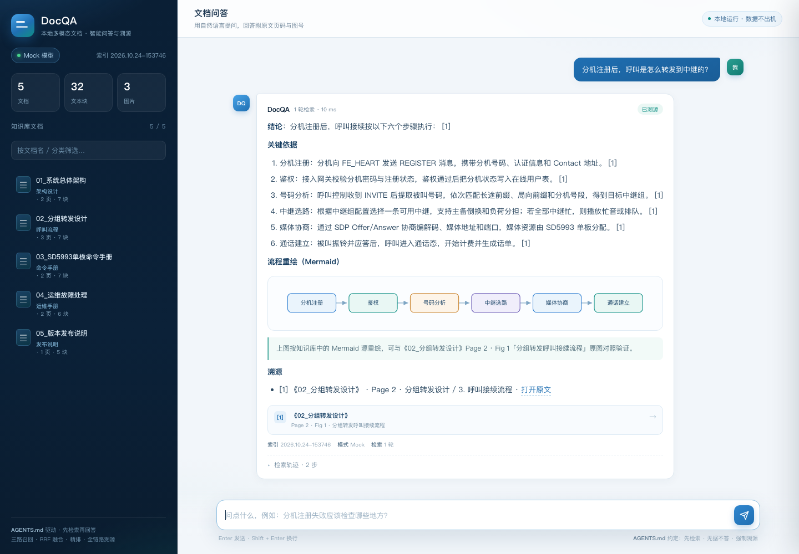
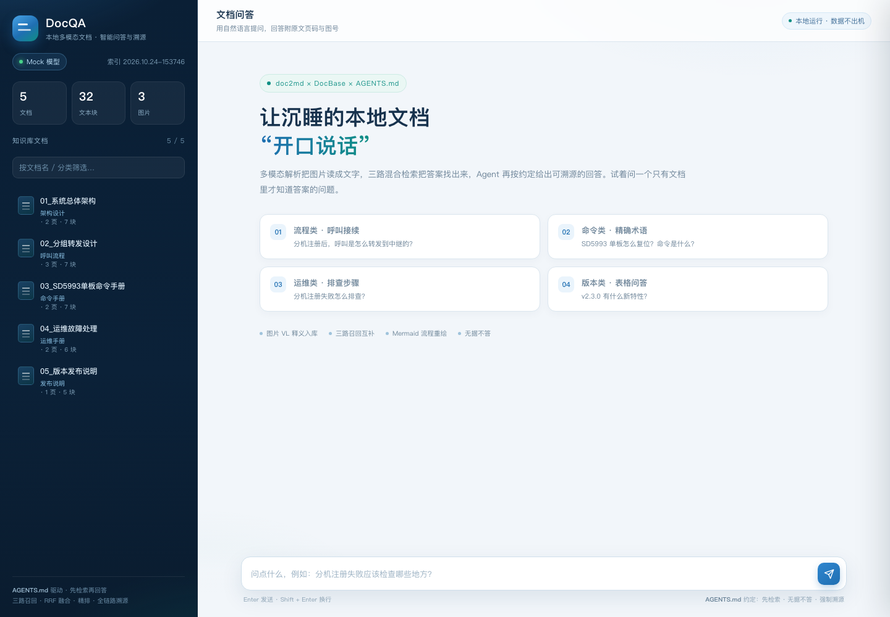

个人本地沉淀了大量 PDF、Word、PPT 等多模态文档，一旦忘记存放位置与文件名，仅凭模糊的内容记忆极难找回。本创意通过 AI Agent（CodeAgent）自动开发 Python 脚本，结合 RAG、Embedding、Reranker、Chat、VL 等大模型能力，预解析本地文档并构建 RAG 数据库，再以 AGENTS.md 指导 Agent 消费该库，实现“内容即入口”的智能问答与精准溯源。
回答 → 文本块 → Markdown → 原始文档
原文链接 · 文档名 · 页码 · 图号，一键跳回原文。
保留对原始文档的链接关系；任意图片可逆向定位到原文档、页码与图题。
> 图 2-1（VL 释义）：注册 → 鉴权 → 号码分析 → 中继选路 → 媒体协商 → 通话建立
纯向量检索对 “SD5993” “FE_HEART_Start” 这类精确术语容易模糊命中；纯关键词检索无法理解 “分机转发是怎么走的” 这类语义问题。三路召回互补盲区 + RRF 消除量纲差异 + Reranker 交叉编码精排——兼顾语义理解与术语精确，这是检索质量的关键保障。
query：SD5993 单板怎么复位？命令是什么？ → 稠密 0.219 · BM25 7.63 · 稀疏 0.07 → RRF 融合 → Reranker 1.00 → TOP-1《03_SD5993单板命令手册》Page 2 · Fig 1。
./run.sh build data/parsed --incremental./run.sh query "分机怎么转发？" --top-k 6./run.sh eval --index data/indexRAG 数据库本身不会自动被使用 —— 必须有人“告诉”Agent 它的存在、用法与边界。AGENTS.md 就是这座桥梁，也是本创意区别于传统 RAG 产品的核心创新点。

